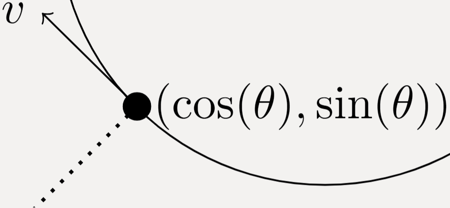
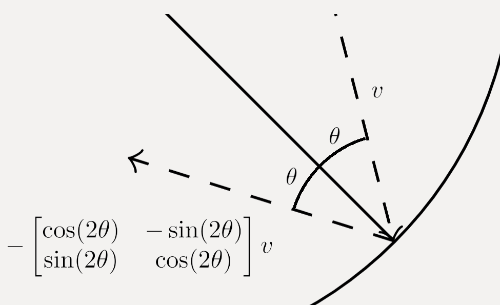
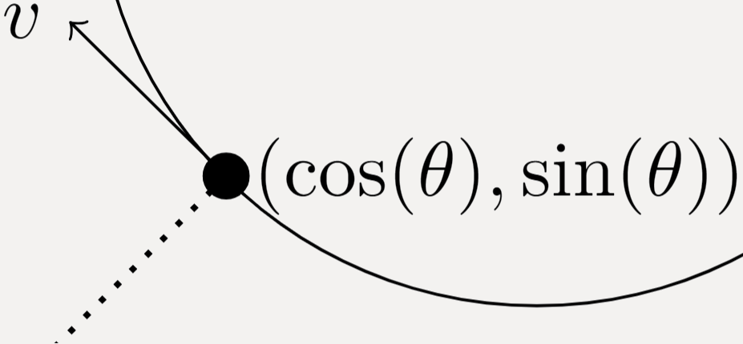
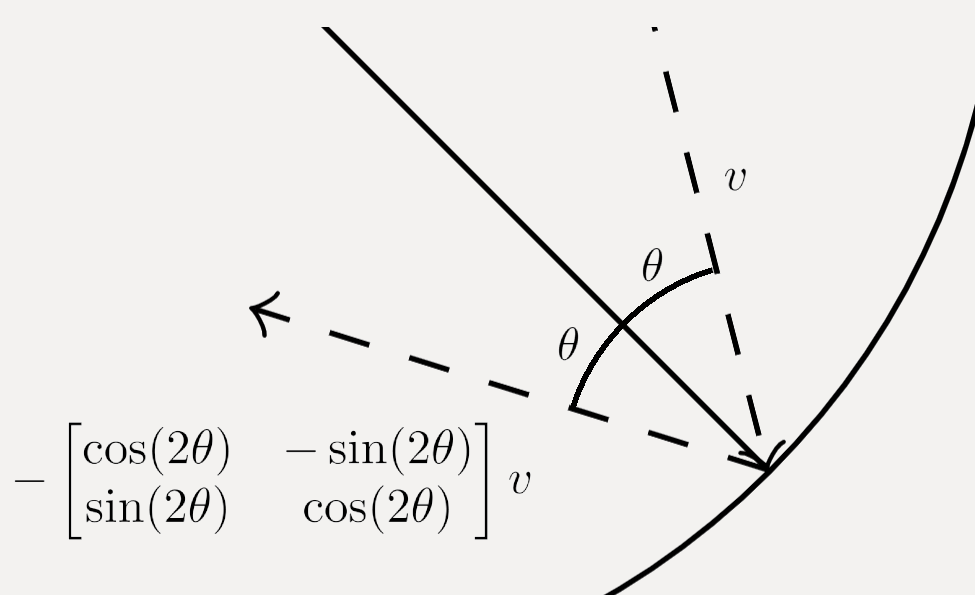

Simple Geometric Circle Art
Overview
I recently gained some interested in generative art
and wanted to try creating something myself. I like
geometric patterns and wanted to create something
along those lines. An interesting geometric
pattern which is not too overly complicated is that
which arises from particles bouncing around inside a circle.
I programmed this and the result you can see below.
An explanation of the process can be found further down. The code can be found on github.
Number of particles in outer circle:
Number of particles in inner circle:
Particle speed:
Line thickness:
Number of particles in outer circle:
Number of particles in inner circle:
Particle speed:
Line thickness:
How it works
The entire art piece is generated by generating random particles in a circle
with a given velocity and
simply following the particles as they bounce around. Two questions which might be of interest are how
to prevent the particles in the outer circle from going into the smaller circle and how to actually reflect the particles
when they encounter the boundary.
In order to prevent the outer particles from going inside the inner circle we just need to ensure that the velocity vector that they are initialized with bounces them around the outer part. This can be done by calculating the tangent vector to the inner circle and using that as the direction for the velocity. Given that we want the tangent at the point \((\cos(\theta), \sin(\theta))\), we can obtain the tangent vector by finding the vector \((v_x,v_y)\) that satisfies $$\cos(\theta)v_x + \sin(\theta)v_y = 0$$ Solving this and obtaining \(v = (v_x,v_y)\) will yield a particle trajectory that never intersects the inner circle as long as the particle is initialized along the vector intersecting the circle center and the point \((\cos(\theta), \sin(\theta))\), see the dotted line in the figure below.  In this project I also added some small random perturbations to the initialization of the point to get some slight variation in the trajectories, while still ensuring that they do not intersect the inner circle.
Similarly, we can obtain the reflection angle \(\theta\) by calculating the inner product between the velocity vector and the normal vector of the circle (the vector pointing towards the center of the circle). The new velocity vector is then obtained by a rotation of \(2\theta\). This can be seen below.  While there are some other aspects to take into consideration, these two are the main ones. If you are interested in the code then it can be found on github.
In order to prevent the outer particles from going inside the inner circle we just need to ensure that the velocity vector that they are initialized with bounces them around the outer part. This can be done by calculating the tangent vector to the inner circle and using that as the direction for the velocity. Given that we want the tangent at the point \((\cos(\theta), \sin(\theta))\), we can obtain the tangent vector by finding the vector \((v_x,v_y)\) that satisfies $$\cos(\theta)v_x + \sin(\theta)v_y = 0$$ Solving this and obtaining \(v = (v_x,v_y)\) will yield a particle trajectory that never intersects the inner circle as long as the particle is initialized along the vector intersecting the circle center and the point \((\cos(\theta), \sin(\theta))\), see the dotted line in the figure below.  In this project I also added some small random perturbations to the initialization of the point to get some slight variation in the trajectories, while still ensuring that they do not intersect the inner circle.
Similarly, we can obtain the reflection angle \(\theta\) by calculating the inner product between the velocity vector and the normal vector of the circle (the vector pointing towards the center of the circle). The new velocity vector is then obtained by a rotation of \(2\theta\). This can be seen below.  While there are some other aspects to take into consideration, these two are the main ones. If you are interested in the code then it can be found on github.